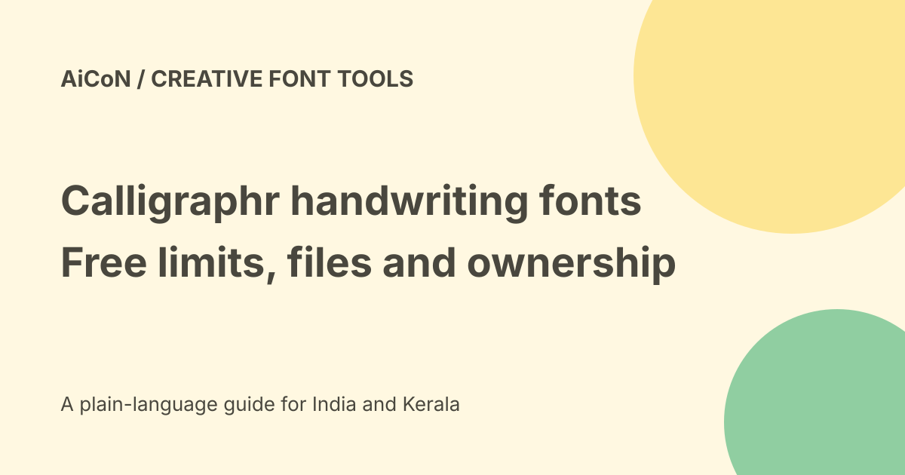

Calligraphr: turn handwriting into a font, with free limits
Calligraphr turns filled character templates into font files. Its free plan requires registration and allows a font with up to 75 characters. You can make many fonts over time, but only work on one at a time on the free plan. That is different from unlimited characters in a single font.

What you make
You write letters or symbols in a template, upload a scan or photograph and build a font. The result lets supported software display typed text in that style.
It does not reproduce the exact motion or context of a real handwritten note. No handwriting sample, account or font was created for this guide.
Free and Pro limits
| Feature | Free | Pro |
|---|---|---|
| Characters per font | 75 | 600 |
| Fonts worked on concurrently | 1 | 20 |
| Variants per character | 2 | 15 |
| Ligatures | No | Yes |
| Single-character spacing adjustment | No | Yes |
| Working-data storage | Browser | Browser and server |
The pricing page lists unlimited fonts created in both plans. The concurrent limit governs how many you can work on at once.
Paid prices and renewal
The official price is $10 for one month, roughly Rs 965, or $6 per month for a six-month upgrade, roughly Rs 579 per month and Rs 3,473 for six months.
INR estimates use Wise's Rs 96.47/USD mid-market rate checked on 7 October 2026. Taxes and bank conversion are excluded. The pricing page offers either a one-time upgrade or a recurring subscription. Review which one you choose and the final total before paying.
Create a first template
- Register on the official site.
- Choose only the characters needed for a small first font.
- Count capitals, lower-case letters, numbers and punctuation against your plan limit.
- Download the PDF or PNG template.
- Fill the boxes clearly, without signatures or private notes.
- Scan or photograph the sheet with all four corner markers visible.
- Upload it and review every detected character.
- Adjust size and baseline where needed.
- Build, preview and download the font.
- Test words, punctuation and spacing in your actual software.
Getting a clean scan
The FAQ recommends 300-600 dpi scans and warns against binary monochrome scanning because it creates dotted artefacts. For phone photos, use even light, avoid shadows and keep the sheet close to flat.
Calligraphr says slight skew is corrected, but straight photos are still preferable. A clipped corner marker or blurred letter can make extraction fail.
Font files and compatibility
The FAQ describes downloading a TTF file after Build font and installing it on Windows or Mac. It also discusses already-created TTF and OTF files continuing to work after an upgrade ends.
Restart an app if it does not see a newly installed font. Check whether a shared document embeds the font or needs the recipient to install it. The FAQ says custom Calligraphr fonts cannot be uploaded into Google Docs.
Ligatures, cursive and Malayalam
Ligatures join multiple characters into one glyph and are a Pro feature. Randomised variants also depend on the receiving app's OpenType support.
Adding arbitrary characters does not prove complete Malayalam shaping or conjunct support. We did not test Malayalam, complex scripts or full cursive output. Try a small representative sample before buying an upgrade.
Who owns the font?
Calligraphr's FAQ says creations are the user's property, can be used commercially and do not require credit to Calligraphr.
That does not give permission to copy another person's protected font or impersonate someone's handwriting. Use your own work or material you have permission to use.
Browser data is not a backup
Free working data is stored in the current browser and does not sync across browsers or computers. The FAQ warns browsers can delete it after inactivity or under storage pressure.
It says Pro server data is deleted when the upgrade expires, while downloaded font files still work even if the account is deleted. Save the font files and original templates separately. Do not treat browser storage as permanent.
Privacy and practical costs
Keep signature specimens and identity documents out of a template. Printing, scanning and paid upgrades can add costs even when the basic software tier is free.
No exact Indian checkout, mobile installation or server-retention control was tested here. Installing a font on a phone is not the same as changing the phone's whole system font.
What changed since the original post?
We add character and storage limits, distinguish recurring subscriptions from one-time upgrades and clarify ownership, Google Docs and untested Malayalam support.
Frequently asked questions
Can I make a font for free?
Yes, within the registered free-plan limits.
Will my downloaded font expire?
The FAQ says it continues working after an upgrade ends.
Does 75 characters cover every language?
No. Plan the exact character set and test the script.
Sources: Official pricing · Official FAQ and ownership · Official ligature tutorial · INR reference rate. Checked 7 October 2026.